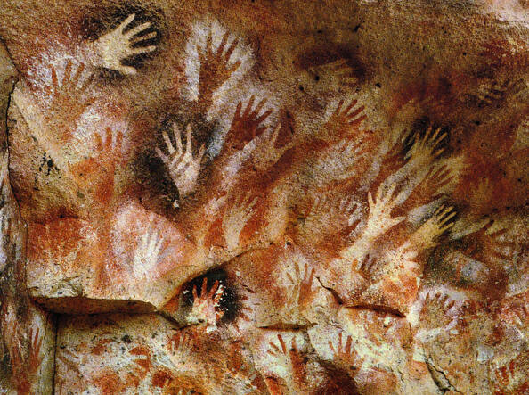
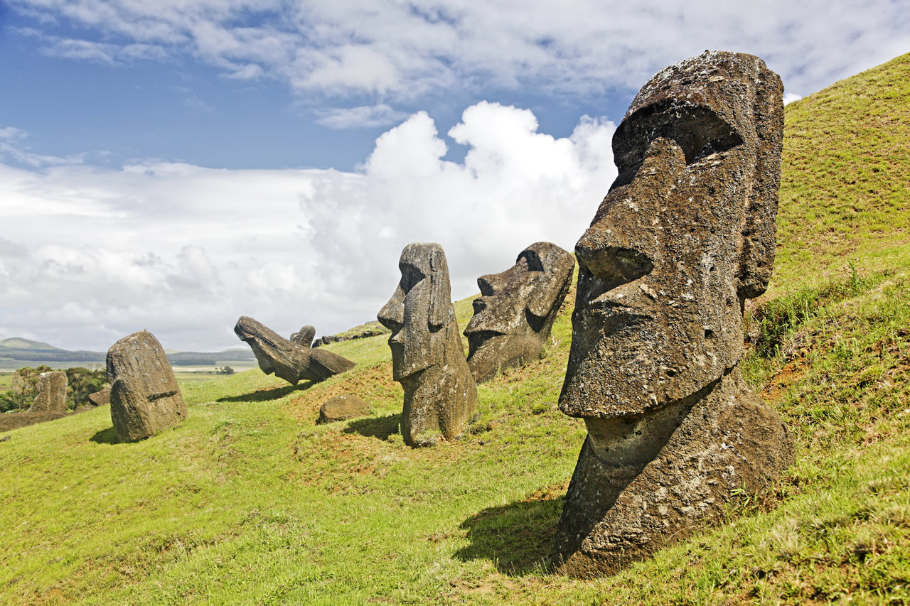
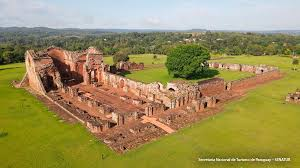

Perú

Cultura Moche
Análisis detallado de la cerámica escultórica y su importancia en los rituales funerarios del norte peruano.
Data estimada: 100 d.C. - 700 d.C. Explorar PerúExplorando el patrimonio cultural a través del tiempo
Análisis detallado de la cerámica escultórica y su importancia en los rituales funerarios del norte peruano.
Data estimada: 100 d.C. - 700 d.C. Explorar Perú
Exploración de la simbología en las máscaras de jade encontradas en los yacimientos de La Venta.
Data estimada: 1200 a.C. - 400 a.C. Explorar México
Interpretación de los glifos mayas que narran el ascenso de los señores de la selva petenera.
Periodo Clásico Maya Explorar Guatemala
Una de las pinturas rupestres más antiguas de América, con manos en negativo y escenas de caza en la Patagonia argentina.
Data estimada: 7000 a.C. – 1500 a.C. Explorar Argentina
Las icónicas estatuas de la Isla de Pascua que vigilan el pasado ancestral de los habitantes polinésicos del Pacífico.
Data estimada: 1250 d.C. – 1500 d.C. Explorar Chile
Un ejemplo imponente de la arquitectura jesuítica en Sudamérica, testigo de la fusión cultural entre misioneros y guaraníes.
Data estimada: Siglo XVIII Explorar Paraguay